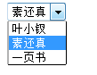
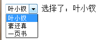

前言
今天搞的有点快，因为上午简单研究了下MVC，发现MVC不太适合前端开发，然后之前看几位前端前辈都推荐前端使用MVVM，但是我对其还不甚了解，所以我觉得下午还是应该先看看他是神马先，后面再决定要不要继续深入下去。
神马是MVVM？
借用我们百科一张美图，所谓MVVM就是model-view-viewmodel模型。
他是微软带来的一项新的技术体验，最先用于WPF，最后发现其模式对前端开发尤其比较合适，所以便在前端流行起来了。
MVVM是对MVC的一个改进，用以适应当代Web开发。
model为数据或者业务逻辑，完全与UI无关，它存储了状态并对问题领域做出处理，model可以写在代码里面或者用json表示、或者数据表中，反正他就是数据啦。
view表示可见元素，按钮、标签、图片等，我们可能会对各个标签绑定事件，但是我们知道这其实是原来controller该做的事情。
简单例子中view被直接绑定到model，model的一些部分只是简单单向绑定显示在view中。
PS：以上至于你们懂不懂，反正我是不懂了。。。用几个字形容就是模模糊糊
因为光是读概念无法了解到实质，所以我们来看看其使用吧！
Knockout
之前我们在写datalist的时候就有朋友提到这个东西，我当时也没有怎么关注，现在一起来看看吧：
knockout是一个轻量级UI库，通过应用MVVM（主角）模式使javascript前端UI简单化：
声明式绑定（declarative bindings）
使用简单的语法将模型model数据关联到dom元素上
UI界面自动刷新（automatic ui refresh）
当模型状态发生改变（model state），UI自动更新
依赖跟踪(dependency tracking)
为转变联合数据，在你的模型数据之间建立隐式关系
模板（templating）
为模型数据快速编写可嵌套的UI
根据以上描述，我们来跟进一番：
Knockout是一个以数据模型（data model）为基础的能够帮助你创建富文本，影响显示和编辑用户界面的javascript类库。
任何时候若是UI需要更新，knockout能够简单的帮助你实现并且容易维护。
但是究竟这个家伙是个神马呢？我也不知道，所以来试试吧。
初探knockout水深
1 <html xmlns="http://www.w3.org/1999/xhtml"> 2 <head> 3 <title></title> 4 <script src="js/jquery-1.7.1.js" type="text/javascript"></script> 5 <script src="js/knockout-2.2.0.js" type="text/javascript"></script> 6 <script type="text/javascript"> 7 var piliPerson = [ 8 { name: '叶小钗', desc: '刀狂剑痴', weapon: '刀剑' }, 9 { name: '素还真', desc: '清香白莲', weapon: '剑' }, 10 { name: '一页书', desc: '百世经纶', weapon: '掌' } 11 ]; 12 $(document).ready(function () { 13 var viewModel = {}; 14 ko.applyBindings(viewModel); 15 }); 16 17 </script> 18 </head> 19 <body> 20 <select data-bind="options: piliPerson, optionsText: 'name'"> 21 </select> 22 </body> 23 </html>

PS：叶大侠之前写了一个dropdownlist与datalist的功能，好像与他有点类似呢：）
我们再拓宽：
1 <html xmlns="http://www.w3.org/1999/xhtml"> 2 <head> 3 <title></title> 4 <script src="js/jquery-1.7.1.js" type="text/javascript"></script> 5 <script src="js/knockout-2.2.0.js" type="text/javascript"></script> 6 <script type="text/javascript"> 7 var piliPerson = [ 8 { name: '叶小钗', desc: '刀狂剑痴', weapon: '刀剑', key: 'yxc' }, 9 { name: '素还真', desc: '清香白莲', weapon: '剑', key: 'shz' }, 10 { name: '一页书', desc: '百世经纶', weapon: '掌', key: 'yys' } 11 ]; 12 $(document).ready(function () { 13 var viewModel = { 14 //observable是一个KO的基础概念，UI可健康(observe)他的值，并且回应他的变化 15 //这里相当于设置了其选择项，当前选择的素还真 16 choseObj: ko.observable(piliPerson[1]) 17 }; 18 ko.applyBindings(viewModel); 19 }); 20 21 </script> 22 </head> 23 <body> 24 <select data-bind="options: piliPerson, optionsText: 'name', value: choseObj"> 25 <option ></option> 26 </select> 27 选择了：<span data-bind="text: choseObj().name"></span> 28 </body> 29 </html>
这个例子很精彩，我们选择后，选择结果会马上体现出来，初始化当然也是对的：

比较神奇的是，我们可以在标签里面使用函数了，和最初的.net越来越靠近了：
function formatStr(name) { return name ? '霹雳人物：' + name : ''; } <span data-bind="text: formatStr(choseObj().name)"></span>
PS：在此小叶子已经认识到了knockout的强大了，小叶子写的那个算是玩具吧。
PS2：我感觉如此使用后，对jquery的依赖降低了哦
惊叹
使用了KO后，似乎我数据模型发生改变了，可能会发生级联反应哦，曾经可能需要手动操作的事情，现在ko帮我们做了！！！
结语
经过今天的学习，虽然没能完全了解MVVM是什么，但是也有所增长，更是发现了ko这个神器，真是不错。
但是，因为我们最近的学习重点，是我们的小窗口，所以这里ko暂时放下，在我们小窗口靠一段落后，我们一起来学习ko先！